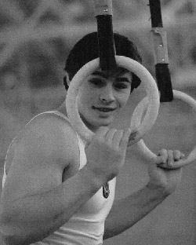

Dmitri Bilozerchev
1983 and 1987 World AA Champion
1983 and
1985 European AA Champion
|

Medal Total
- Olympic Games: 3 Gold, 1
Bronze
- World Championships: 8
Gold, 4 Silver
- European Championships: 10
Gold
|
Dmitri was born on December 22,
1965 in Moscow. His coach was Alexander Alexandrov at the Central Army
Sports Club. Dmitri's father had wanted his
son to become a hockey player, but his mother took him to the gymnastics section
instead. The world AA champion in 1983, Bilozerchev was expected to
retain his title in 1985. But a car accident just before the Championships
-- resulting in a leg broken in more than 40 places -- nearly put an end to his
career. Incredibly, he returned to international competition and in 1987
won his second World AA title. Dmitri is the assistant coach at the Ohio
State University.
He was inducted into the International Gymnastics Hall of Fame in 2003.
Competition Results
- 1980
Jr. USSR Cup (Candidate for Master of Sport): 1st AA
- Jr. USSR Championships (Candidate for Master
of Sport): 1st AA, 1st PB, 1st HB, 2nd R, 3rd PH
-
- 1981
- Jr. Friendship Tournament (Druzhba): 1st
Team, 1st AA, 1st PH, 1st V, 2nd FX, 2nd PB
Jr. USSR-GDR Dual Meet: 1st Team, 1st AA
-
- 1982
- Jr. European Championships: 1st AA, 1st FX, 1st PH,
1st RG, 1st V, 1st PB, 2nd HB
- Swiss Cup: 1st AA
- USA-USSR Dual Meet: 2nd Team, 3rd AA
- USSR Championships: 5th AA, 2nd PH, 3rd
FX, 6th V
-
- 1983
- Dynamo Spartakiade: 1st AA
- European Championships: 1st AA, 1st RG, 1st V,
1st HB, 6th FX
- Moscow News: 1st AA, 1st PH, 1st PB
- USA-USSR Dual Meet: 1st Team, 3rd AA, 1st PH, 1st RG,
1st V, 1st PB, 1st HB
- USSR Championships: 1st AA, 1st FX, 1st
PH, 1st HB, 2nd R, 2nd V, 4th PB
- World Championships: 2nd Team, 1st AA, 1st PH,
1st RG, 1st HB, 2nd FX, 6th V
-
- 1984
- CSSR Spartakiade (Olomouc): 1st Team, 1st AA, 1st PH,
1st RG, 1st HB, 3rd V, 7th PB
-
- 1985
- European Championships: 1st AA, 1st FX, 1st
PH, 1st RG, 1st PB, 1st HB, 2nd V
- Moscow Cup: 1st AA
- University Games: 1st Team, 1st AA, 1st FX, 1st PH,
1st RG, 1st PB, 2nd HB
- USSR Championships: 1st AA, 1st PH
USSR Cup: 1st AA
-
- 1987
USSR Championships: 1st PH, 1st R, 1st HB
- USSR Cup: 1st AA, 1st PH, 1st RG, 1st HB
- World Championships: 1st Team, 1st AA, 1st PH,
1st HB, 2nd RG, 2nd PB, 4th V
-
- 1988
- Olympic Games: 1st Team, 3rd AA, 1st PH, 1st
RG
- USA-USSR Dual Meet: 1st Team, 2nd AA
- USSR Championships: 1st AA, 3rd PH
- USSR Cup: 1st AA
-
- 1994
- Reese's International Cup: 2nd AA
-
- 1995
- Reese's International Cup: 3rd AA
This page was last updated on August 26, 2007.
© Gymn Forum